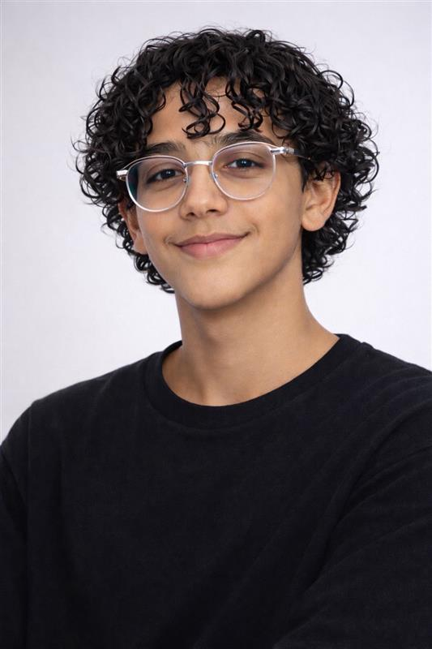

Accueil
| Accueil | Productions scolaires | Mes passions | Mes vidéos | Mon site de rêve |
|---|

J’aime bien prendre soin de moi et de mon style. J’aime m’habiller proprement, choisir mes vêtements, tester des nouvelles tenues. Pour moi c’est important d’avoir un bon style parce que ça montre un peu qui on est. Je suis aussi passionné par les voitures de luxe. J’aime leur design, le bruit du moteur, la vitesse… je trouve ça impressionnant. Souvent je regarde des vidéos dessus ou je me renseigne sur les nouveaux modèles. Pendant mon temps libre, je joue aux jeux vidéos. Ça me permet de me détendre et de passer du temps avec mes amis en ligne. J’aime bien la compétition et essayer de m’améliorer. Je fais du foot en club aussi. Ça me prend du temps, mais j’aime ça. J’aime l’ambiance dans l’équipe, les matchs, la sensation quand on gagne. Le foot m’a appris à ne pas abandonner et à travailler en équipe. Et sinon, petit détail important : j’adore le kalb elouz, c’est vraiment mon dessert préféré
Projet SNT - Dernière mise à jour : 15/12/2025
Les textes et images utilisés n'engagent que son auteur : Delph